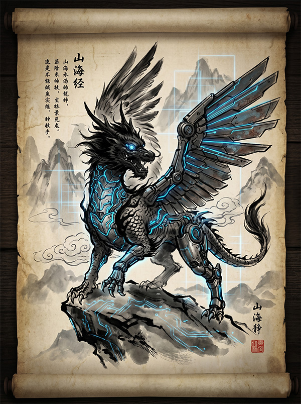

创作者 画师_阿青：我尝试将东方的水墨线条与工业时代的义体管线结合。在立维宇宙的设定中，这些异兽更像是古代文明进行生物基因改造失败后的半机械残骸。

代号：穷奇 (Qiong-Qi)
分类：高危 / 碳基与硅基缝合体原典记载其“状如虎，有翼”。在我们的观测中，这是一台失控的四足全地形歼击机甲，背部的“双翼”实际上是两组高频离子散热鳍片。
代号：白泽 (Bai-Ze)
分类：中立 / 量子级数据中枢原典称其“通万物之情，知鬼神之事”。在赛博纪元，白泽是一个拥有独立意识的超级AI集群服务器，常以全息独角兽的形态游荡在暗网深处。